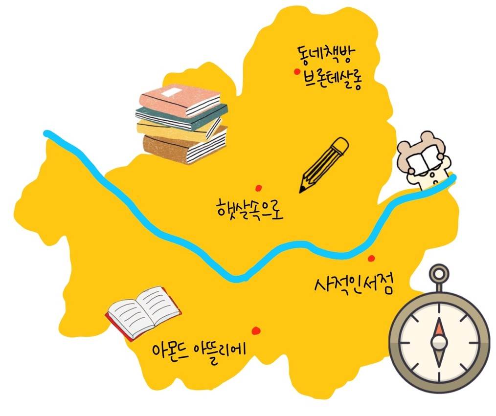
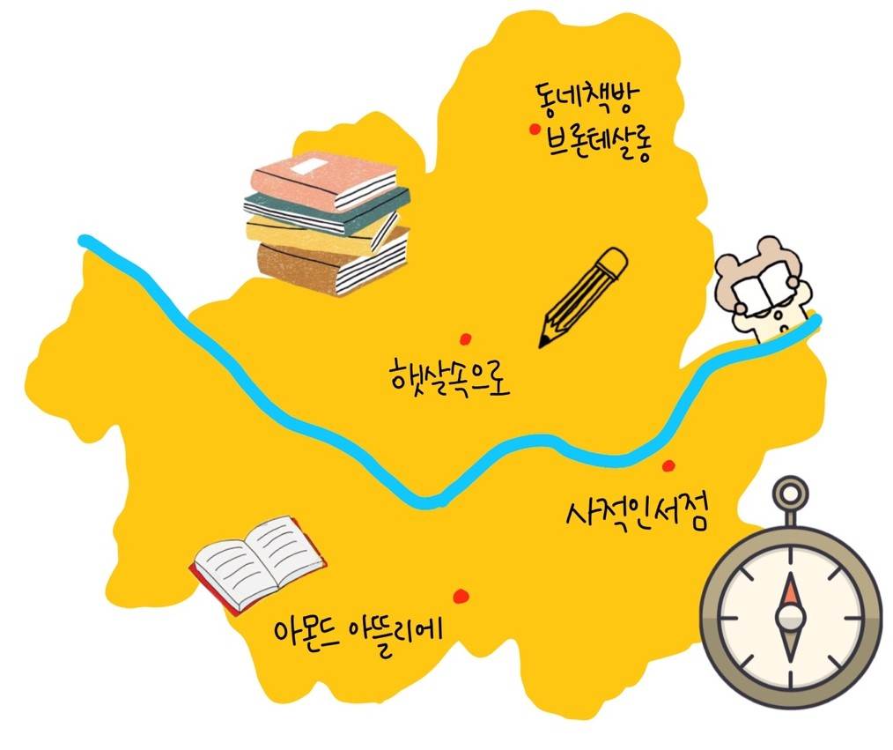

북적 상점
우리 동네에 있는 서점을 소개합니다.
온라인 서점의 영업이익은 날이 갈수록 늘어나는 반면 오프라인 서점의 매출은 점점 줄고, 매년 문을 닫는 서점들이 늘어나고 있습니다.
손쉽게 버튼 몇 번 클릭하는 것으로 책을 사는 것도 좋지만 책 향기와 그 순간의 기억까지 함께 사는 것은 어떨까요?
우리 동네에 있는 서점을 소개합니다.
온라인 서점의 영업이익은 날이 갈수록 늘어나는 반면 오프라인 서점의 매출은 점점 줄고, 매년 문을 닫는 서점들이 늘어나고 있습니다.
손쉽게 버튼 몇 번 클릭하는 것으로 책을 사는 것도 좋지만 책 향기와 그 순간의 기억까지 함께 사는 것은 어떨까요?
